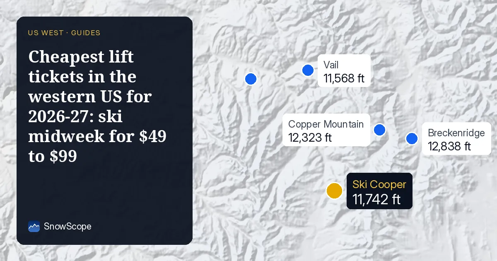
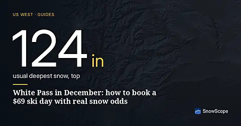

Cheapest lift tickets in the western US for 2026-27: ski midweek for $49 to $99
You can still ski in the American West for under $50 a day this winter. Ski Cooper in Colorado charges $49 for an adult on weekdays, held at last year's rates. The trick across the whole list is the same: ski Monday to Thursday, buy online, and pick a small independent area with a deep snow record.
See the live snow forecast for Ski Cooper in the SnowScope appSnow depth, powder alerts and the 3D map, free.
Seven cheap day tickets, cheapest first
Ski Cooper near Leadville is $49 on weekdays and $99 on weekends and holidays. Loveland sells its early-season ticket for $60 online, through 13 December 2026, against $119 at the window. Lookout Pass on the Idaho-Montana line costs $63 midweek when you reserve ahead and $75 on weekends.
White Pass in Washington starts at $69 on off-peak days and $89 on peak days, both online and dynamic. Beaver Mountain in Utah keeps one price, $75, with no peak-day surcharge. Montana Snowbowl above Missoula is $78 on weekdays and $85 on weekends. Mt. Baker, the snowiest of the list, is $98.8 on off-peak days and $115.42 on peak days, before tax.
The snow behind the price
We checked mid-mountain in our snow history of 46 past winters. Mt. Baker usually has 47 in (119 cm) in December and 24 weeks a winter with at least 20 in (50 cm) in 9 winters out of 10, the best of the group. White Pass has 41 in (104 cm) and 20 such weeks, Lookout Pass 32 in (81 cm) and 17 weeks, Montana Snowbowl 31 in (80 cm) and 18 weeks.
In Colorado, Loveland usually holds 29 in (73 cm) in December with 19 snow-sure weeks, and Ski Cooper 26 in (65 cm) with 18. Beaver Mountain has the thinnest December of the list, 22 in (57 cm), and 15 weeks. Every area here gets far deeper in January, so a midweek January trip is the best deal of all.
Our picks
Cheapest overall: Ski Cooper on a weekday, $49, with snow that is usually reliable at its high base of 10584 ft (3226 m). Best snow for the money: White Pass from $69 off-peak, or Mt. Baker if you are happy to pay more for the deepest usual December snow on our list.
Best for a Colorado road trip: Loveland's $60 early-season ticket before 13 December 2026, an hour from Denver, with lifts up to 12684 ft (3866 m). Beaver Mountain is the family pick: one price every day, no surprises.
How to pay the low price
Most of these prices are weekday, off-peak or online rates. Buy before you drive: window prices are higher at Loveland and Lookout Pass, and dynamic prices at White Pass rise as days sell. Avoid holidays, when the low rates do not apply.
Taxes and fees can add a few dollars at checkout, and Mt. Baker shows its prices before tax. Check the area's own website the week you go.
Season passes like the Indy Pass can beat day tickets if you ski many days, but for one or two midweek trips a year, these walk-up and online prices are usually the cheaper way. Compare both before you commit, and remember that a cheap ticket at a small area often comes with free parking and short lift lines.
Where to stay on a budget
Small ski towns and valley motels keep the trip cheap: Leadville for Ski Cooper, Georgetown for Loveland, Wallace for Lookout Pass, Packwood for White Pass and Glacier for Mt. Baker. The map in this article shows stays under $150 a night for a midweek trip from 7 to 10 December 2026.
Mountain passes in winter can close in storms. Carry chains or snow tires and check the road report and the avalanche forecast before you go.
Tips for skiers
- Cheapest: Ski Cooper, $49 on weekdays.
- Most snow for the money: White Pass from $69 off-peak, 41 in (104 cm) in a usual December.
- Colorado deal: Loveland $60 online until 13 December 2026.
- Ski Monday to Thursday and buy online before you drive.
More maps (external sites)
References and credits
- Ski Cooper, day pass 2026-27 (official) www.skicooper.com/cooper-day-pass/
- Loveland Ski Area, lift tickets 2026-27 (official) skiloveland.com/lift-tickets/
- Lookout Pass, lift tickets 2026-2027 (official) skilookout.com/lift-tickets/
- White Pass, online day tickets 2026/27 (official) skiwhitepass.com/online-day-ticket-sales
- Beaver Mountain, tickets and passes 2026-2027 (official) www.skithebeav.com/tickets-and-passes/
- Montana Snowbowl, lift tickets 2026/27 (official) montanasnowbowl.com/sbblog/lift-tickets/
- Mt. Baker Ski Area, daily lift tickets (official) www.mtbaker.us/tickets-and-passes/daily-lift-tickets/
About these numbers
Snow numbers: SnowScope snow history, 46 past winters (1980-81 to 2025-26) at three heights of the resort (an estimate for an area, not resort reports). Lift, run and access facts: the sources listed below, checked on the date shown.
Cite this report
For research, teaching or the press: the numbers and charts are free to reuse under CC BY 4.0 with this citation.
SnowScope (2026), Cheapest lift tickets in the western US for 2026-27: ski midweek for $49 to $99, https://snowscope.app/blog/en/2026/11/cheapest-lift-tickets-us-west-2026-27-weekday-deals.html, accessed 2026-11-19
SnowScope (Atlas Labs). (2026, November 19). Cheapest lift tickets in the western US for 2026-27: ski midweek for $49 to $99. SnowScope snow reports. https://snowscope.app/blog/en/2026/11/cheapest-lift-tickets-us-west-2026-27-weekday-deals.html
BibTeX
@misc{snowscope2026cheapestliftticketsuswes,
author = {{SnowScope (Atlas Labs)}},
title = {Cheapest lift tickets in the western US for 2026-27: ski midweek for $49 to $99},
year = {2026},
month = nov,
howpublished = {\url{https://snowscope.app/blog/en/2026/11/cheapest-lift-tickets-us-west-2026-27-weekday-deals.html}},
note = {Published 2026-11-19 17:16 UTC; accessed 2026-11-19}
}· CC BY 4.0 · Methods, data and tools →
Ski Cooper: snow and temperature by height, this winter vs last (tools) →
Follow Ski Cooper
Free: a message when fresh snow is coming, and the forecast every morning.
More snow reports

Loveland sells $60 online tickets through December 13, then $159 from December 14. Early December snow averages 20 in (50 cm) at mid-mountain, but the base is half as deep as mid-winter.

White Pass rewards early bookings on weekdays. By mid-December, mid-mountain holds 40 in (102 cm) in a typical year. Data from 13 November 2026.

Mt. Baker in December: 46 in (116 cm) of snow at mid-mountain on a typical 15 December, and a $98.80 Monday-to-Thursday ticket sold on the day only.